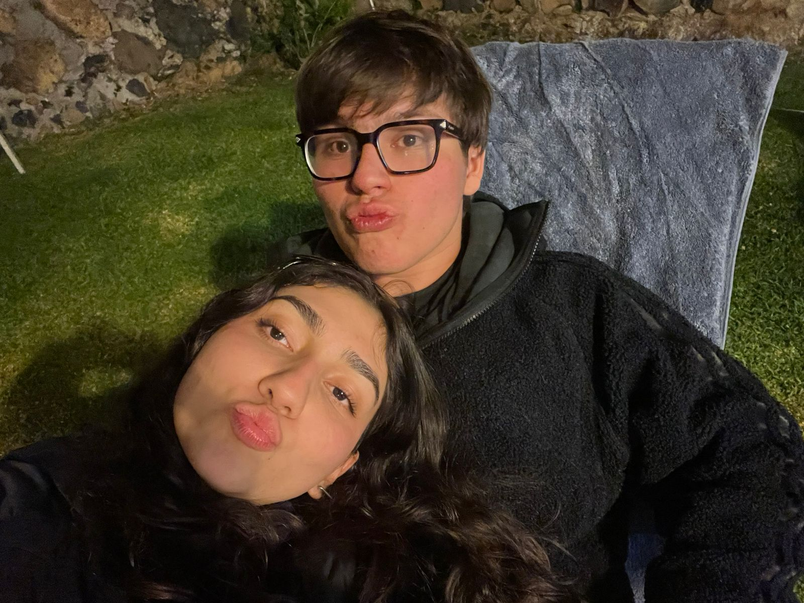

💌
Hola Jimevalo,
Te amo con todo mi corazón y espero que este sea nuestro último San Valentín separados. Nunca pensé que podría extrañar tanto a una persona, pero creo que habla de lo especial que eres. Y bueno, el resto es la carta de 10 meses, decidí mandártela así para que puedas verla cuando y dónde quieras. Te amo Jimevalo.
Mi amor, no sé si te lo esperabas o no pero quiero hacer esto como debí hacerlo hace 10 meses. Quiero empezar diciéndote que te amo y que eres lo mejor que me ha pasado en la vida, una vez quitando lo obvio del camino quiero que sepas que desde hace mucho mi papá siempre me recitaba un poema que aunque choteado por internet en los últimos años quedó grabado en mí porque sabía que cuando encontrara a la persona perfecta terminaría por entenderlo.
No se me importa un pito que las mujeres
tengan los senos como magnolias o como pasas de higo;
un cutis de durazno o de papel de lija.
Le doy una importancia igual a cero,
al hecho de que amanezcan con un aliento afrodisíaco
o con un aliento insecticida.
Soy perfectamente capaz de soportarles
una nariz que sacaría el primer premio
en una exposición de zanahorias;
¡pero eso sí! -y en esto soy irreductible
- no les perdono, bajo ningún pretexto, que no sepan volar.
Si no saben volar ¡pierden el tiempo las que pretendan seducirme!
Ésta fue -y no otra- la razón de que me enamorase,
tan locamente, de María Luisa.
¿Qué me importaban sus labios por entregas y sus encelos sulfurosos?
¿Qué me importaban sus extremidades de palmípedo
y sus miradas de pronóstico reservado?
¡María Luisa era una verdadera pluma!
Desde el amanecer volaba del dormitorio a la cocina,
volaba del comedor a la despensa.
Volando me preparaba el baño, la camisa.
Volando realizaba sus compras, sus quehaceres...
¡Con qué impaciencia yo esperaba que volviese, volando,
de algún paseo por los alrededores!
Allí lejos, perdido entre las nubes, un puntito rosado.
"¡María Luisa! ¡María Luisa!"... y a los pocos segundos,
ya me abrazaba con sus piernas de pluma,
para llevarme, volando, a cualquier parte.
Durante kilómetros de silencio planeábamos una caricia
que nos aproximaba al paraíso;
durante horas enteras nos anidábamos en una nube,
como dos ángeles, y de repente,
en tirabuzón, en hoja muerta,
el aterrizaje forzoso de un espasmo.
¡Qué delicia la de tener una mujer tan ligera...,
aunque nos haga ver, de vez en cuando, las estrellas!
¡Qué voluptuosidad la de pasarse los días entre las nubes...
la de pasarse las noches de un solo vuelo!
Después de conocer una mujer etérea,
¿puede brindarnos alguna clase de atractivos una mujer terrestre?
¿Verdad que no hay diferencia sustancial
entre vivir con una vaca o con una mujer
que tenga las nalgas a setenta y ocho centímetros del suelo?
Yo, por lo menos, soy incapaz de comprender
la seducción de una mujer pedestre,
y por más empeño que ponga en concebirlo,
no me es posible ni tan siquiera imaginar
que pueda hacerse el amor más que volando.
Déjame decirte jimevalo que enamorarse de ti, de tu cuerpo, de tu risa, de tu forma de ser, de tus sueños e ilusiones es algo que cualquiera podría hacer pero tú me enseñaste a enamorarme no sólo de lo obvio sino también de tus extrañezas, tus enojos, tus tristezas y dolencias y es que no importa que rías o eructes, que sonrías o llores, que seamos cómplices o disidentes, no puedo ni podré dejar de amarte. Te amo. Felices 10 meses.
